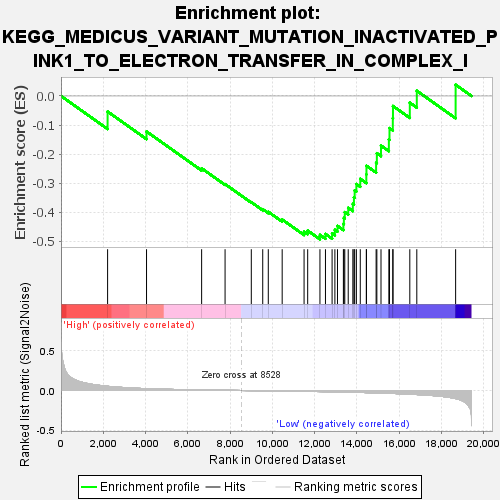
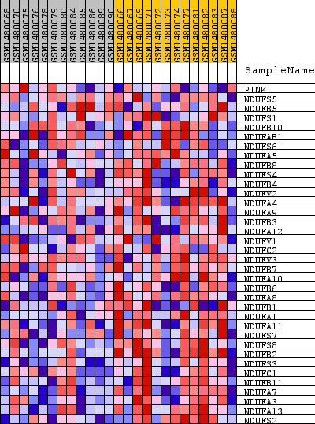
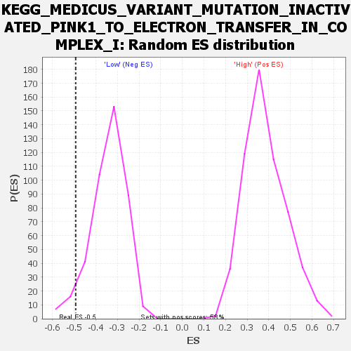

| Dataset | WG6v3.CYGB.cls#High_versus_Low.CYGB.cls#High_versus_Low_repos |
| Phenotype | CYGB.cls#High_versus_Low_repos |
| Upregulated in class | Low |
| GeneSet | KEGG_MEDICUS_VARIANT_MUTATION_INACTIVATED_PINK1_TO_ELECTRON_TRANSFER_IN_COMPLEX_I |
| Enrichment Score (ES) | -0.4931918 |
| Normalized Enrichment Score (NES) | -1.4534582 |
| Nominal p-value | 0.050119333 |
| FDR q-value | 0.2935284 |
| FWER p-Value | 0.993 |

| SYMBOL | TITLE | RANK IN GENE LIST | RANK METRIC SCORE | RUNNING ES | CORE ENRICHMENT | |
|---|---|---|---|---|---|---|
| 1 | PINK1 | PINK1 | 2205 | 0.053 | -0.0537 | No |
| 2 | NDUFS5 | NDUFS5 | 4047 | 0.023 | -0.1223 | No |
| 3 | NDUFB5 | NDUFB5 | 6654 | 0.007 | -0.2490 | No |
| 4 | NDUFS1 | NDUFS1 | 7763 | 0.003 | -0.3033 | No |
| 5 | NDUFB10 | NDUFB10 | 9004 | -0.002 | -0.3655 | No |
| 6 | NDUFAB1 | NDUFAB1 | 9545 | -0.003 | -0.3898 | No |
| 7 | NDUFS6 | NDUFS6 | 9808 | -0.004 | -0.3987 | No |
| 8 | NDUFA5 | NDUFA5 | 10465 | -0.006 | -0.4252 | No |
| 9 | NDUFB8 | NDUFB8 | 11501 | -0.010 | -0.4670 | No |
| 10 | NDUFS4 | NDUFS4 | 11672 | -0.011 | -0.4633 | No |
| 11 | NDUFB4 | NDUFB4 | 12252 | -0.013 | -0.4781 | Yes |
| 12 | NDUFV2 | NDUFV2 | 12513 | -0.015 | -0.4750 | Yes |
| 13 | NDUFA4 | NDUFA4 | 12827 | -0.016 | -0.4729 | Yes |
| 14 | NDUFA9 | NDUFA9 | 12959 | -0.017 | -0.4606 | Yes |
| 15 | NDUFB3 | NDUFB3 | 13082 | -0.017 | -0.4473 | Yes |
| 16 | NDUFA12 | NDUFA12 | 13361 | -0.019 | -0.4402 | Yes |
| 17 | NDUFV1 | NDUFV1 | 13385 | -0.019 | -0.4197 | Yes |
| 18 | NDUFC2 | NDUFC2 | 13427 | -0.019 | -0.3998 | Yes |
| 19 | NDUFV3 | NDUFV3 | 13590 | -0.020 | -0.3850 | Yes |
| 20 | NDUFB7 | NDUFB7 | 13809 | -0.022 | -0.3714 | Yes |
| 21 | NDUFA10 | NDUFA10 | 13861 | -0.022 | -0.3488 | Yes |
| 22 | NDUFB6 | NDUFB6 | 13895 | -0.022 | -0.3250 | Yes |
| 23 | NDUFA8 | NDUFA8 | 13976 | -0.023 | -0.3031 | Yes |
| 24 | NDUFB1 | NDUFB1 | 14160 | -0.024 | -0.2852 | Yes |
| 25 | NDUFA1 | NDUFA1 | 14447 | -0.026 | -0.2700 | Yes |
| 26 | NDUFA11 | NDUFA11 | 14453 | -0.026 | -0.2403 | Yes |
| 27 | NDUFS7 | NDUFS7 | 14910 | -0.030 | -0.2298 | Yes |
| 28 | NDUFS8 | NDUFS8 | 14945 | -0.030 | -0.1971 | Yes |
| 29 | NDUFB2 | NDUFB2 | 15141 | -0.032 | -0.1708 | Yes |
| 30 | NDUFS3 | NDUFS3 | 15513 | -0.035 | -0.1497 | Yes |
| 31 | NDUFC1 | NDUFC1 | 15543 | -0.036 | -0.1106 | Yes |
| 32 | NDUFB11 | NDUFB11 | 15700 | -0.037 | -0.0765 | Yes |
| 33 | NDUFA7 | NDUFA7 | 15708 | -0.037 | -0.0346 | Yes |
| 34 | NDUFA3 | NDUFA3 | 16504 | -0.046 | -0.0229 | Yes |
| 35 | NDUFA13 | NDUFA13 | 16835 | -0.051 | 0.0179 | Yes |
| 36 | NDUFS2 | NDUFS2 | 18672 | -0.102 | 0.0387 | Yes |

